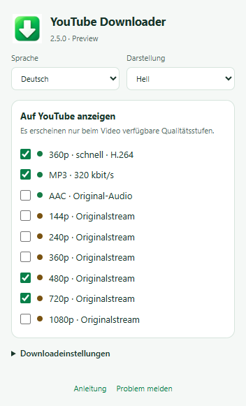

YouTube Downloader — Anleitung
2.5.0 Preview · Windows
Installation
- Gesamtes Release-ZIP in einen beschreibbaren Ordner entpacken. SHA256SUMS.txt prüfen. Browser, Windows und System-.NET werden separat vorausgesetzt.
- YouTube-Tabs schließen und Install.cmd normal ohne Administratorrechte starten. Optionale Sprache: Install.cmd de, ru oder en.
- edge://extensions, chrome://extensions oder browser://extensions öffnen. Entwicklermodus aktivieren und „Entpackte Erweiterung laden“ wählen.
- %LOCALAPPDATA%\YTWin7_360_MP3\extension auswählen. Bei Updates Erweiterung und YouTube-Seite neu laden.
- Grünen Pfeil in der Browserleiste anheften. Darüber Sprache, Darstellung und sichtbare Formate wählen. Zuerst 480p versuchen.
Preview-Einschränkung: YouTube kann eine Sitzungsbestätigung verlangen (attestation required) und den Originaldownload abbrechen. Kein automatischer Wiedergabemodus und keine Garantie vollständiger Downloads.
Verwendung
Ein abgeschlossenes YouTube-Video öffnen, Metadaten und Werbeende abwarten. Gewünschtes Format wählen. Wenn SABR eine aktuelle Anfrage benötigt: kurz abspielen, pausieren und erneut versuchen. Keine automatische Rückkehr zur Wiedergabe. Bei Formatverweigerung höchstens drei Versuche mit derselben Auflösung.
Dateien und Entfernung
Original-MP4, MP3 und AAC/M4A werden auf dem Desktop gespeichert. Schnelles 360p nutzt den Browser-Downloadordner. Audiocache und temporäre Dateien liegen in LocalAppData. Uninstall.cmd entfernt nur die Browserintegration; Downloads, Cache und Programmdateien bleiben erhalten. Erweiterung separat im Browser entfernen.
Wiederherstellung nach Upgrade: Die erste vorhandene Installation wird mit Erweiterung, lokaler Komponente, FFmpeg/FFprobe und Registrierung unter %LOCALAPPDATA%\YTWin7_WatchCapture\BACKUP_PRE_250 gesichert. YouTube-Tabs schließen, Restore_previous.cmd aus diesem Paket starten und Erweiterung neu laden. Bei Installationsfehlern wird die jeweilige Transaktionskopie wiederhergestellt. Uninstall.cmd erhält Programmdateien und Audiocache.
Fehlerbehebung
Version 2.5.0 im Menü, installierten Erweiterungsordner und erfolgreichen Abschluss von Install.cmd prüfen. Eine „SABR 1.2“-Leiste gehört zu einer alten Version. CHECK_ENVIRONMENT.cmd zeigt lokale Komponente und Browserregistrierung. Bei Problemen Browser-/Windows-Version, Qualität und genaue Meldung nennen; keine privaten Adressen, Cookies oder persönlichen Protokolle veröffentlichen.
Kompatibilität und Tests
2.5.0 unter Windows 11: Chrome 155.0.8059.80 und Edge 155.0.4283.45 bestanden Menü-/Einstellungstests und echte Native-Messaging-Kommunikation über die Benutzerregistrierung in getrennten Browserprofilen. Benutzerinstallation in einem Testordner, Upgrade von 2.4.2, Wiederherstellung und Entfernen der Integration wurden geprüft. Lokale Medientests umfassen 144–1080p, AAC, Opus und MP3 mit Prüfung unveränderter Pakete. Der echte 480p-Download in Edge endete an der YouTube-Sitzungsprüfung; ein vollständiger Live-Download wurde dabei nicht bestätigt. Frisches Windows 7, Windows 10 und aktuelles Yandex wurden mit 2.5.0 noch nicht unabhängig geprüft. Für 2.4.2 meldete der Benutzer Erfolg auf zurückgesetztem Windows 7 mit Yandex 24.10.4.850 und Windows 11.
Einschränkungen
Preview: YouTube kann Protokolle ändern oder Streams ablehnen. Auswahl 144–1080p; nur verfügbare Qualitäten erscheinen. Livestreams, Playlists, DRM, Vimeo und andere Seiten werden nicht unterstützt. Signierte Adressen können ablaufen; eigenständige Token-Erneuerung fehlt noch. MP3 320 verbessert die Quelle nicht. EXE unsigniert.
Rechte und Komponenten
Eigener Quelltext dient der Einsicht als Lern- und Portfolioprojekt, ohne Open-Source-Lizenz. Unveränderte veröffentlichte Programme dürfen privat ausgeführt werden. FFmpeg, LAME, googlevideo und protobuf behalten separate Lizenzen und Quelltextbedingungen. Siehe RIGHTS.md und THIRD_PARTY_NOTICES.md.
